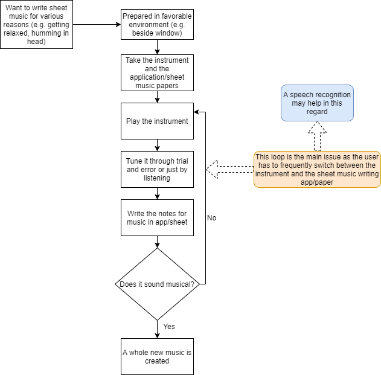
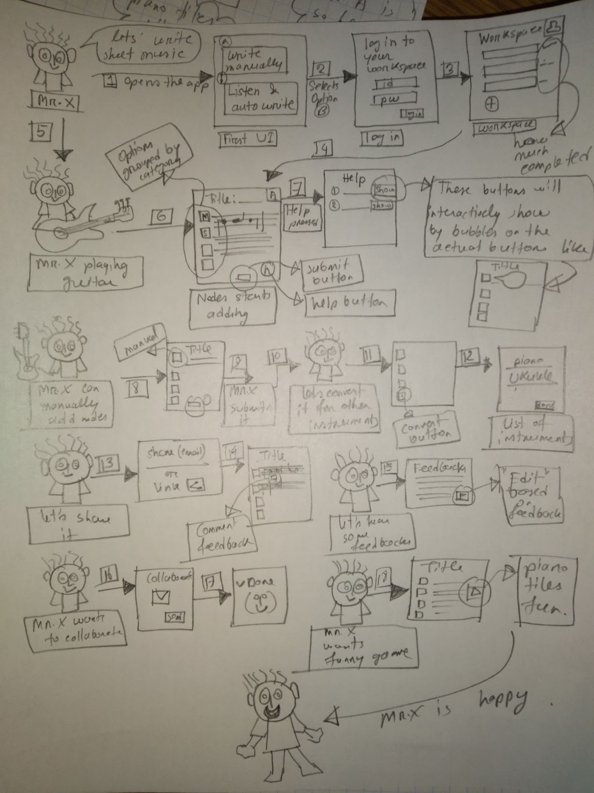
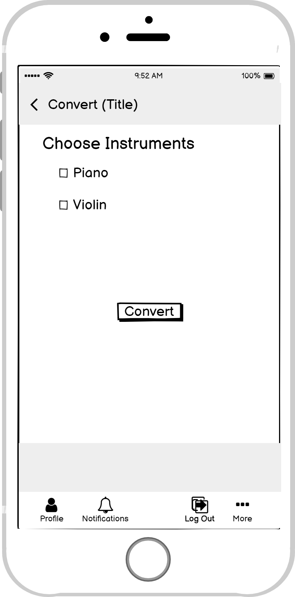
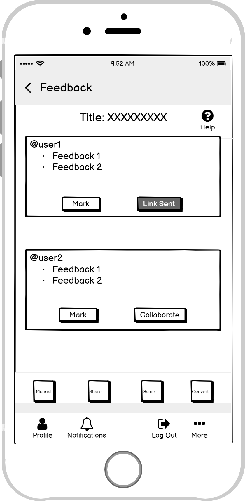
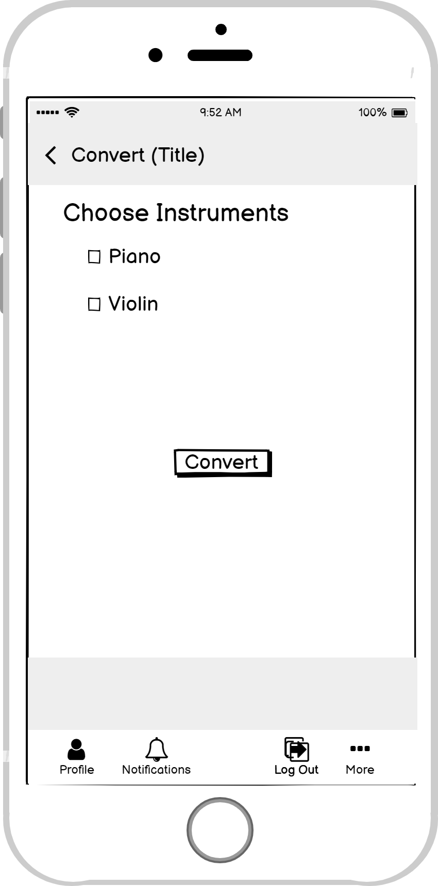
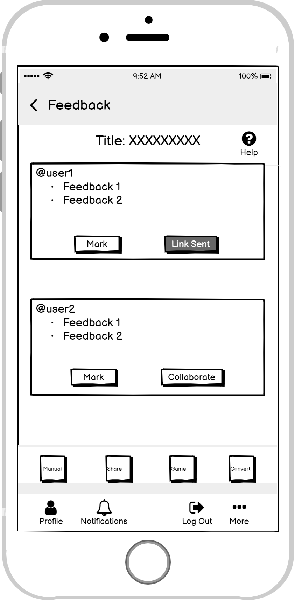

Project Definition The task of the application is simple- writing sheet music
Focus Making the task of writing sheet music easier, simple for beginners (mostly) to professional
Problems with existing softwares Several problems with the previous applications:
- Have to pay for more features
- Complicated features
- Hard to navigate
- Difficult to write
- Limited share option
- Frequent switching while using instrument and app
Sitting at their favorite places (mostly in their rooms)
Most users like to play instruments while writing sheet music
Updating the sheet music (maybe at some later time)
Sharing their music on social media
Working on incomplete music
Trying to rewrite for some other instruments

Problems users faced
- Constant switching from instruments to app
- Difficult to share and receive feedback
- Option for converting a sheet music for other instruments

Personal Workspace (log in)
Sharing Feature
Getting Feedback and Collaborate
Game for fun
Smart Auto Writer
Convert for Other instruments
Wireframes (Smart Writer)
 



Happy to know that they don't have to manually write
Most users liked the idea of playing games
Liked that they can share on social media platfoms and get feedbacks
Easy to navigate the main writing screen
Improving the manual writing section
Including games for other instruments as well
Including more detailed documentation
System status notifications
Some minor aesthetic issues
অবজার্ভ করার সময় কাজ ঠিকমত করা কঠিন অনেক...তুমি কি সিউর প্রফেসর এটাই করতে বলসে?
This is really strange to do the task and at the same time talk about how I am writing sheet music
I don't like the look of the app :|